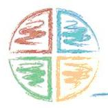

Blog
|  |
Not Quite a BlogOccasional jottings from the Convener about what has been going on in the Hub. Please ask questions or comment by clicking here |
24 June 2014
Later this week I shall retire as Convener of the Hub to make way for the transfer of the Hub into NES. I have thoroughly enjoyed my work over the past six and half years, visiting all the boards, working with Executive Leads and Coordinators, and meeting a wide range of NHS staff and others committed to creating better bereavement care.
It has been an exciting time, with
- Shaping Bereavement Care
- When Someone Has Died
- e-Learning: Grief and Bereavement for NHSS
- the development of board policies and protocols
- guidance for the disposal of pregnancy loss
- working group on funeral poverty
- a new network for those working with bereaved children
Along with the increasing interest in bereavement in NHSS, we have seen
- the development of Good Life Good Death Good Grief
- new procedures for death certification
- enquiries into cremation of infants and babies
- research on costs of bereavement
I recently presented a short paper at the 10th ICGB in Hong Kong, entitled “Scotland’s Story”. There was a deal of interest from many of the 30 countries represented there.
My thanks to all of you for your support and encouragement, and thanks too to the Scottish Government for all their vision and support and for this next stage of development.
John Birrell
03 April 2014
The Hub exists primarily to support NHSScotland and other groups across Scotland in the development of better bereavement care. Put Bereavement Care on the Agenda has become our warcry, and it was to encourage this that we launched the Agenda Awards at the beginning of the year. So far we have not had a lot of entries, which is disappointing since I know there are a lot of interesting things happening out there. So if you have brought bereavement onto the agenda of any group, or department, or to any committee, working group, or similar where you are involved, please tell us about it. You never know you might win an award!!
In January the Hub hosted, at the request of the Scottish Government, a network day for organisations working with bereaved children. As a result of that a new page of the website was stablished and a directory of organisations working in this area was ceated. Click here to visit this page
I was in NHS Ayrshire and Arran last week at a very sucessful stakeholders' day - around 100 people attended not just from the NHS, but from the local councils, schools, voluntary sector, and funeral directors. It was good to hear Professor Allan Kellahear speak about palliative care and bereavement care in the community, and the need to build compassionate communities. Compassionate communities are resillient communities, and resilience, we know, is an important tool in coping with grief. And Professor Steven Revel was on the platform also, speaking about coping with trauma, and the need for us all to be sensitive to the specific needs of those who have witnessed traumatic deaths and other events.
A few weeks ago I was in Greater Glasgow and Clyde on the day they took delivery of an excellent little card they had commissioned from Cruse for all their staff. Entitled "Bereavement - pointers for staff" it gives five DOs and five DONTs when speaking with someone who has recently been bereaved. A copy of the card is on the NHSS Boards' Publications page - click here to access.
Dundee University Department of Anatomy and their Creative Writing department may seem an odd combination, but together they linked with Good Life Good Death Good Grief to stage a fascinating day in Edinburgh lst month called In Memoriam where writers and artists joined with clinicians in considering how we relate to the human body in death. You can read a brief report here
I have now had a first meeting with representatives from NES about the transfer of the Hub to them, which is scheduled for 1 July. There is still a lot to be discussed, but it does sound as though this transfer will secure the funding for the Hub and that NES are determined to maintain the work that we have established over the past five and a half years of the Shaping Bereavement Care programme. In Ayr last week I was asked to do an overview of what had been achieved, both within NHSS and wider over this period, and it was fascinating to see just what has been done, Shaping Bereavement Care, When Someone Has Died, the Cruse e-learning, Supporting Bereaved Children network, Funeral Poverty Group, Reserach on Costs of Bereavement, and loads more. I shall be presenting a similar report under the title Scotland's Story at the 10th International Conference on Grief and Bereavement in Contemporary Society, in Hong Kong in June.
10 January 2014
The publication yesterday of the report Life After Death by the National Council for Palliative Care, the National Bereavement Alliance and Dying Matters caused a flutter of tweets and a gaggle of sound bites. Thanks to the BBC News headlines first thing in the morning, you would have assumed the report was solely concerned with the experience of people returning to work after a bereavement. However this was only one of the "six steps to improve support in bereavement" which the report was proposing.
Quoting the recent Scottish research on the costs of bereavement the report states: "The costs of bereavement are too great to ignore, both for individuals and society."
This report stresses six important areas where action is required.
1. A named minister with responsibility for bereavement. In Scotland we have developed the work on bereavement largely under the banner of health, and Michael Matheson MSP, as minister for Public Health holds the responsibility there. However the cross-cutting nature of bereavement means that it is, or should be, on the agenda of every minister, and be taken seriously in education, criminal justice, finance and every other department of government. Almost a quarter of a million people in Scotland every year are significantly impacted by grief, and government must take this seriously. While the Health Department guidance Shaping Bereavement Care called for a coordinator in every health board, similar coordination of government thinking on bereavement is urgently required.
2. A national review of the impact of financial administrative and economic changes on those who have been bereaved. The report calls for a cross-departmental review in this area, recognising that "money worries are one of the biggest reported concerns" of bereaved people. Much of the responsibility for this lies with Westminster, where decisions about benefits, universal credit and under-occupancy charges etc are currently decided. However in Scotland we are actively involved in discussing funeral poverty – the increasing gap between the cost of a funeral and the available funds a person or a family has to pay for the funeral. The Hub leads a working group including money advice professionals, churches, representatives of the funeral industry and bereavement agencies which is seeking ways forward.
3. Clarity about who is responsible for commissioning and providing bereavement support, with better coordination and information about services. One of the startling figures in the report is that just 54% of the newly created Health and Wellbeing Boards in England had considered end-of-life care in their forward planning. In Scotland, where of course we do things differently, every health board with direct patient involvement has responded positively to Shaping Bereavement Care, and Executive Leads and Coordinators are in place in almost every board. However the extent of the implementation of the guidance varies considerably and resources remain woefully short. In the same way, while Scotland is well-served by the voluntary sector, the attention and support given to those working in bereavement care bears no relation to the actual costs of bereavement. The Scottish research, cited above and in the report, showed that for those bereaved by the death of a spouse, the additional health costs were around £22 million. Add to that the health costs of other bereavements, and all the other costs over and above the health costs, and the imbalance between costs and investment in support is striking.
4. Training in bereavement for all coming into contact with bereaved people, at a level appropriate to their role. In 2011 Cruse Bereavement Care Scotland was commissioned by SGHD to develop on-line learning courses for NHS staff, and to date almost 10,000 members of staff have undertaken this training. CBCS reports a growing interest in the courses from outwith the NHS - in social care, prisons, residential care, education etc. Most health boards also have their own in-house courses, and many of the hospices have developed education units. However taking learning about bereavement out into the general public is a challenge - there remains a reluctance to talk about death!
5. Better bereavement support at work. This is the section which caught the headlines. There have been several calls for statutory paid bereavement leave over the past few years, and such stories are always create interest. However the individual nature of grief perhaps suggests that each person's requirements here may vary. Even within families, who is to decide which members of the family are entitled to paid leave, and which are not? Rather, it is important that every employer has an understanding of grief, and that their compassionate leave policies demonstrate equality in how they respond to a bereaved employee; but compassionate discretion is also important, and the exercise of that depends on an open and honest discussion about each person's needs. The same need for understanding and to demonstrate compassion, applies to the way an employee is treated on their return to work, both by management and by colleagues.
6. More compassionate communities where everyone knows enough about grief to play their part in supporting people around death. This is, perhaps, the most important step of the six. As a nation we still do not talk about dying, death and bereavement. And if we aren't prepared to talk about it, how can we ever manage to put into practice the principles of good bereavement support? The importance of being able to talk about your grief, and about the person you grieve, is key to finding a good outcome to your bereavement. But the opportunity to talk depends on the availability of someone to listen. The Scottish organisation Good Life Good Death Good Grief is campaigning to make Scotland more open to these issues, and to encourage each of us to be more open to talk about end of life issues.
Life After Death is a call to action South of the border. We need to echo that call in Scotland, to government and to people. In Scotland a quarter of a million people each year are experiencing the total disruption to their living which is bereavement. As a nation that cares, we need to respond better than we do.
5 December 2013
I had an interesting email from a colleague in Japan yesterday who came to visit a year ago. He writes: I'm actively working with local volunteers to make Matsumoto (where I live now) more compassionate and supportive for the bereaved. We get together once every month to make a booklet that is modelled after "When someone has died: information for you." The draft should be ready by January 2014. We then plan to invite or reach out to groups of health professionals, undertakers, police, fire-fighters, interested NPO staff, and local government officials so as to get feedback to improve quality of the draft. Once we finalize the content and format of the booklet, we then hope to present it to the mayor (who is a Medical Doctor) whose chief policy is to make Matsumoto the city of long and healthful lives. It's great to know that our work in Scotland is being replicated in Japan!
Nearer home, there have been a number of developments. It was good to visit NHS Ayrshire and Arran at the beginning of November and see plans developing there for a bereavement follow up project which would contact relatives at a fixed time following a death. I know these projects are happening elsewhere, within specific units, but I am not aware of any board doing this on a large scale? I also have a visit coming up to meet the bereavement group in NHS Dumfries and Galloway and will be speaking shorlty to the new Executive Lead in NHS Orkney.
The following week I had an enjoyable visit to the Scottish Partnership for Palliative Care where I had been asked to speak about Death Certification. This was just after the implementation of the new process was postponed, but it was still good to have a chance to explain and discuss some of the principles.
I also represented the Hub at the Scottish Cot Death Trust consultation on Sudden Unexpected Death in Infancy which discussed the transfer of responsibility for monitoring and reporting from HIS to local health boards, and at the Good Life Good Death Good Grief event the following week where we heard of the plans for a national weekend for Scotland to remember "Absent Friends" based on the old Celtic festival of Samhain.
In November also, I met with the Hub's funders in Scottish Government, following the publication of the Review of the Hub by Scottish health Council. The review, and the feedback from our Network Day, formed the basis for a very positive discussion about the Hub's achievements and how the work could be continued. Negotiations are now underway to find a way of "mainstreaming" the work of the Hub into NHSScotland. It is too early to say what this will look like, but we will of course keep you all posted.
On Tuesday I was at the Choose Life Annual Forum to hear the Minister launch Choose Life 2. The new strategy concentrates very largely on Suicide Reduction, but we were assured that the focus on postvention - the care of those bereaved by suicide - would continue.
And so the work goes on - all of it about getting bereavement care onto the agenda, and in that respect it is exciting to look forward to two events coming up in January.
The Hub will launch the SGBH 2014 Agenda Awards - a competition open to all members of the Hub to get bereavement and bereavement care on to the agendas of more meetings. I know it is frustrating, but we have already shown that working through the groups and committees of the NHS and other agencies is an important way to advance the knowledge and planning of bereavement care. Details of the Agenda Awards will be posted later this month in the news zone.
Of course equally important is supporting those who are actually delivering bereavement care, and, at the request of Scottish Government, the Hub will be hosting a network day for organisations which work with and support bereaved children in Scotland. We are doing this in conjunction with the Child Bereavement Network, and you will find details of that event by clicking here.
23 October
Have your say on article below in our discussion area - click here to share your thoughts.
The Hub held the second meeting of the group looking at Funeral Poverty on Tuesday this week. We met in the premises of Citizens Advice Scotland in Edinburgh, and as well as CAS, there was representation from Money Advice Scotland, Church of Scotland, NHS Bereavement Coordinators, Hospice Bereavement Coordinators, Good Life Good Death Good Grief, Hospice Chaplains and the Society of Allied and Independent Funeral Directors. We were again joined by Anne Corden, a senior researcher from the Social Policy Unit at York University.
The outcomes from our first meeting, back in April, had included raising with the professional bodies for funeral directors (SAIF and NAFD) the need for more clarity and transparency around their charges, and this was again a central theme at this meeting. We also highlighted the need for consistency of terminology - for example the way terms like basic, simple, low budget or standard are used to describe a funeral, suggesting that this might be cheapest available, when often this is not the case. We noted how these terms may be used by different funeral directors to include different levels of service or added extras.
Other issues discussed included the differences in the cost of burial or cremation across the country, and how these costs have increased in recent years (by over 50% in the past 5 years). However, a report is due out soon which will analyse these costs across the UK, and will show that these costs form only around a third or less of the total cost of a funeral in Scotland.
We also looked at the need to encourage a discussion of funeral culture - what do we need to include and what could be left out, or arranged privately - for example buying your own flowers from the florist or the supermarket.
We heard of the excellent work done by one voluntary organisation in London which trains "mentors" to support families on low incomes to make choices around funerals they need to arrange, and which has negotiated special rates with local funeral directors. There was also discussion about other contractual arrangements which have been made by local authorities to ensure a funeral is available at less than half the price of the average funeral. Is there a place for developing similar services in Scotland?
The main concern remains how people on a low income or with limited resources can arrange a funeral when so often such arrangements require to be made at short notice. With the average funeral costing around £3,500, not including the discretionary items which people like to add on (like flowers, catering and memorials) and with funeral directors increasingly looking for a deposit to cover all or at least some of the non-discretionary items, where can people find support? Payday loan companies may be appropriate for some who only need a very short-term loan, but we discussed the possibility of credit unions becoming more widely involved in funding this type of purchase.
The long-standing discussion is about the need to increase the cap on the Funeral Payment available, to those who qualify, through the Department of Work and Pensions and to improve the turn around time for applications. However it was felt that realistically this would not change, and finding ways of reducing costs, and of supporting and empowering families to make more realistic choices about the funeral was a more likely way forward.
It was pointed out that the NHS claims to support people from cradle to grave, but in fact the cover tends to be from cradle to mortuary. Is there an argument for a nationally available, government funded, basic "disposal" onto which those who wish could add services, memorials etc as and when they wished and had funds available.
Have your say on this topic in the discussion area - click here to share your thoughts.
5 October
Looking back over September, the main item on the Hub's agenda seemed to be preparation for the Network Day, which took place on Wednesday 2 October in Stirling. Almost 90 people came together for a day which was split between formal inputs on current topics and networking time around the tables, with themed tables in the morning and scenarios to spark discussion in the afternoon. Throughout the day ideas were sought for the way the Hub should develop, and these will be fed in to the future planning in the Core Group and to the Scottish Government. Click here for a fuller report on the day and to see the presentations and video of the day.
The Network Day also saw the launch of our Twitter presence. Please start using this account to talk about issues around bereavement and bereavement care. #griefhubscot is the address.
September also saw the submission by the Scottish Health Council of their review of the Hub. Many thanks to all of you who completed the survey the SHC sent out, and to those Coordinators and Exec Leads who were intereviewed. We hope the SHC will publish the report in due course, but currently it is being studied by the Scottish Government group who provide our funding. We will report the outcome of that just as soon as we hear anything.
Other events in September included a meeting with Sandra Stankus to hear about the exciting plans for a new bereavement office planned in Aberdeen Royal Infirmary, and attendance at the 11th Annnual Death Dying and Disposal conference where I was speaking about the Scottish guidance on dispoal of preganancy loss to the ineterest of a number of people in England and elsewhere where clinical waste remains the most common disposal route.
Meanwhile discussion continues around the production of a new edition of When Someone Has Died which is due in April for the introduction of the new death certification procedures, and around the issue of funeral poverty. If you haven't seen it, you might be inetersted in the latest report on the cost of dying, which shows the average cost os a funeral, inclusive of everything, has gone up to £7,622.
August was a busy month with visits to a number of boards.
It was good to re-visit the Golden Jubilee and to hear of the developments there with Jim Battison expanding his role as Mortuary Manager to take on responsibility for Family Relations, and beginning to explore what that might mean as he meets families after a death in the hospital. It was also interesting to hear about their introduction of Schwarz Centre Rounds as a way of debriefing after critical events - including deaths in the hospital. It will be good to hear more about this as they develop this idea.
I was able to combine a speaking engagement in the Borders with a visit to NHS Borders where David Thaw, the Bereavement Coordinator, and his colleagues shared their new Bereavement Policy and a Bereavement Protocol which combines procedures in a number of different locations. Both documents are now in the NHS Resources section of the website. The speaking engagement was with the Borders Voluntary Community Care Forum, where I had been invited to discuss When Someone Has Died. The group had studied the booklet carefully and from that had gone on to discuss a variety of related matters around death, dying and bereavement. I came away with some useful suggestions for the next edition of WSHD.
The following week I was in Edinburgh to meet with Ann Chalmers from Child Bereavement UK and Ann Rowland, CBUK Director of Bereavement Services. CBUK were successful in an application for funding from the Scottish Government to develop some of their work in Scotland, and we look forward to hearing of the appointment of staff to lead that work which will focus on coordinating and supporting exisiting work with bereaved children in the more deprived areas of our cities.
My next stop was Stornoway - my first visit to NHS Western Isles. Again it was good to see a near-final draft of a bereavement policy and protocol. We will get it onto the Hub as soon as it is signed off. My main purpose there was to meet a group who are developing a programme called "Bereavement First Aid" which will be a Level 1 programme of blended learning for all NHS staff, based around Course 1 of the Cruse e-learning, followed by a a group session of discussion, awareness raising and skills. This is being taken forward by a very enthusiastic group including chaplaincy, palliative care and general practice.
In among all this we were represented at meetings of the Cremation Commission, the Death Certification Advisiory Group and the Death Certification Implementation Board, and responded to a range of questions from as far away as Cambridgeshire, the Netherlands and Canada.
Then there was the planning for the NETWORK DAY on 2 October, which is filling up quickly, and intial planning for the 4th NATIONAL CONFERENCE ON BEREAVEMENT IN A HEALTHCARE SETTING which is scheduled for September 2014.
Altogether a busy month, which was rounded off by attending Professor Craig White's seminar on Living with Complicated Grief. The seminar introduced his book of that title, published by Sheldon Press. This is a self-help book which encourages people to understand the nature of complicated grief and to utilise a number of psychological exercises such as imaginal writing and conversations.
5 August
Bookings are now being taken for The Hub Network Day. The programme is now finalised and available here. We have a very full day of information giving and sharing, in the comfortable surroundings of the Stirling Management Centre, one of only two venues in Scotland awarded the highly coveted Conference Centre of Excellence Award. The day will cost only £25 per person, and will definitely return value for money. Book now to avoid disappointment!
The Death Certification Team at Scottish Government hosted a meeting of the Bereavement Coordinators at St Andrews House last week to discuss the local implementation of the new death certification procedures, and how bereavement services could support that work. The new procedures will impact on the experience of bereaved people who may find that the planning of a funeral is delayed while the death certificate is reviewed. This new requirement will affect around 25% of deaths, selected randomly, but delays may affect the majority of deaths. A consultation has recently been launched as to who should be eligible for an expedited review, allowing funerals to go ahead before the conclusion of the review process. You can read the consultation and how to respond to it here.
It was good to attend the meeting of the National Bereavement Alliance in London last month. This emerging group links bereavement organisations and services in England and Wales and at the July meeting I presented a report on the range of work we have been doing in the Hub. You can access the presentation here. I am glad that representatives of the NBA will be attending our Network Day.
I was privileged to share with a number of parents of those with Multiple and Profound Learning Disabilities who met to review some of the work that is being undertaken by PAMIS around bereavement resources for this very special group. You can read about the PAMIS project here.
Browsing the papers this month I came across two interesting snippets.
Sherlock Holmes star Eddie Marsan suggested audiences are drawn to tragic stories because it helps prepare them for grief. Marsan plays the father of a teenager in Channel 4's new four-part drama Southcliffe, about a quiet market town devastated by a spate of shootings after a lone gunman goes on the rampage.
Eddie said: "I think humans create these stories, in books, films, TV and plays, in order to go through a cathartic exercise which prepares us to deal with grief. Because grief is part of life. We will experience grief at one point or another. But grief isn't the end of the story, you transcend grief, you come out the other side of it. You may not think you will but you do. "And I think these stories take us through that rollercoaster ride and get us through the other end." [Express and Star – 5 August]
And this about the cumulative effect of grief: The retiring state Coroner in Western Australia told how he finds funerals difficult, admitting there are times he struggles to hold back tears when nobody else is crying.
It's an almost peculiar admission for somebody who faces the tragedy of death every day, but the outgoing State Coroner says the ceremonies erode his ability to put work at arms' length and provide an occasion when the "enormity of the sorrow" breaks through. You go to a funeral and somehow . . . I think the grief that has been held down comes to the fore," Mr Hope says. "I find it very difficult not to suddenly burst into tears when nobody else is. There is a sort of cumulative grief you are holding in check and the funeral sometimes seems to be the trigger that releases all that." [The West Australian]
15 July
Evaluation of the Hub: It’s been a while since the last update on this blog, but that doesn’t mean we haven’t been busy! After a couple of weeks holiday, I had a really helpful meeting with folk from the Scottish Health Council who will shortly be undertaking an evaluation of the Hub for the Scottish Government. While this is primarily to help in decisions about funding, we are really looking forward to hearing their findings and seeing what people find helpful – and unhelpful – in the Hub.
Board Visits: A visit to Greater Glasgow to meet Jackie Britton who has taken over responsibility for much of the roll out of Shaping Bereavement Care was an encouraging sign of things to come there. It was also good to re-visit Dumfries and Galloway a couple of weeks ago and hear from Director of Nursing Hazel Borland of the plans to take forward Shaping Bereavement Care there under the Person Centred work-stream. And this week I received an invitation to visit NHS Western Isles – the only health board I have never visited since I started the Shaping Bereavement Care work in 2009. I am also due to make a return visit to NHS Borders where I have also been invited to meet the Borders Voluntary Community Care Forum.
Cross Party Group: Last month I attended the regular meeting of the Scottish Parliament Cross Party Group on Funerals and Bereavement. This group brings together MSPs, Funeral Directors and representatives of some of the voluntary sector groups to discuss things like problems when someone dies overseas, return of ashes following cremation, the cost of funerals, and death certification, and also issues raised by MSPs on behalf of constituents.
Funeral Poverty: An interesting email last week from a man who had read about funeral poverty on our website. Ken West, who is the author of A Guide to Natural Burial is shortly to publish a book on the British Way of Death which he is calling “R.I.P. Off!” Our own work around Funeral Poverty is on-going, and we have received encouraging responses to our proposals from both the National Association of Funeral Directors and COSLA.
Facebook: I have been looking at some of the stories turned up by a search on Google Alerts under “grief” and found this interesting article which suggests that Facebook gives people a space to do their grieving. A research paper entitled “The Ghosts in the Machine: A grounded theory approach to understanding how social networking sites are used to manage death, loss and grief” is currently under review. Read the article in The Advocate here.
Network Day: Don’t forget the Hub Network Day on Wednesday 2 October. Updates on Bereavement Education. A full day of networking, updates and discussion. The programme will be posted on the website later this week, but make sure the date is in your diary. The day will be subsidised and will cost only £25.
27 May
When we launched the Hub we said it would be predominantly a virtual network, linked by the website. But we also said that we would try to offer occasional opportunities to meet with each other. The first Hub Network Day will be held in Stirling on Wednesday 2 October. Please put that date in your diary now and we will post more details very soon.
A meeting such as that reminds us that bereavement is not just an experience, but a topic for study and research, and the breadth of the research base is what can make our work effective. The NHS Scotland Quality Strategy calls on us to develop evidence-based practice, and if we, in the Hub, are to be a community of good practice then we need to be aware of that research. We have now added a page ot the website for Research Papers and we hope that anyone undertaking research in Scotland will allow us to share their work on that page. Recent reports on the Socio-Economic Costs of Bereavement can be found there, along with an interesting dissertation on how student nurses on an oncology ward cope with death of their patients.
Bereavement Research: At the beginning of the month I was fortunate enough to be invited to be a candidate for election to the International Work Group on Death Dying and Bereavement and to attend their 27th meeting which was held in Victoria, Canada. It was a busy week with study groups each day; stimulating and challenging, but made enjoyable by the presence of so many people whom I had only known as names on a booklist before! There was a lot of interest in how we have developed things in Scotland - and a degree of jealousy for the way bereavement care has been mainstreamed within Scottish Government policy.
Cremation of Babies and Infants: There's been a lot in the press over the past few months about parents who have experienced the death of a baby or infant and have received confusing messages about cremated remains. The Scottish Government has set up an independent commission to look into this and bring forward recommendations. I have been invited to serve on the commission. The Commission has issued an invitation to parents and others to submit written evidence, and I would encourage members of the Hub who have concerns about this topic, or who are in touch with parents who have concerns, to visit the Commission's pages on the Scottish Government Website.
The Amazon website tells me that the 5th edition of the Diagnostic and Statistical Manual, published by the American Psychiatric Association will be available from 31 May for only £85.36. You may have heard some of the debate and discussion over the past few months around what is called the "bereavement exclusion". Up until now the criteria for diagnosing major depression had a clause which accepted that people who were bereaved might present being depressed, but that depression was part of normal grieving. The "exclusion" was important because such depression would resolve as the grief work was done. The removal of that clause opens the way for people to be diagnosed as having a major depressive illness because they are grieving. The result of that, which is of concern, is that this signposts an increasing medicalisation of grief. It also opens the way for the development of a "grief pill". We know that bereaved people want the pain to go away. But should that pain be dulled out by medication, or should it be worked through as part of coming to terms with the death of a loved one. Grief is painful - but it is often in the working though of that pain that people find their way to the new normality in which they are reconciled with their grief.
23 April
Over the past month we have heard a great deal about baby deaths, with the concerns raised from Edinburgh at the end of last year sparking off a range of other debates about baby funerals and the disposal of ashes. I expect that many of Hub members may have been involved in discussions at local level. These are sensitive topics, and we are reminded that the death of a baby or of a child is something which stays with parents for a very long time.
The various enquiries which have been called for may help to clarify what has happened in the past, but underpinning all of this is the need for very clear communication between hospitals, funeral directors, cemetery and crematorium management and parents. If there are going to be no ashes, we need to say so. If we are not sure whether there will be any ashes or not, we need to say that. And if we are uncertain whether the "ash" is of human origin or comes from the coffin, we need to be honest about that.
Cruse Bereavement Care Scotland has just launched an e-learning course on bereavement following the death of a child. It will find its way onto learnPro menus across NHSScotland over the next month. You may also be interested in the Scottish Stillbith Seminar which is being hosted by Scottish Government and SANDS in Edinburgh on 14 June.
Communication is at the heart of most of the complaints about death and dying. And behind poor communication there is often a lack of confidence around speaking about death. Members of the Hub can help change that by being open in our own discussions about death. One big step is to stop using euphemisms and be prepared to use words like dead and died.
Good Life Good Death Good Grief hold their first National Awareness Week from 13 - 19 May. As part of that they are encouraging people to set up "Before I Die" walls where passers-by can add a thought about what they would like to do before they die - and at the same time become slightly more aware that death is something universal. There will be an on-line wall as well, where we can all add our thoughts! We'll add a link to the on-line wall as soon as it is announced - please cascade that link when you see it.
I had a really useful day in NHS Highland earlier this month, with meetings with a variety of staff involved in developing bereavement services there. Thanks to the Hub members who came along for a general discussion, or to talk directly about their work. I also spent an interesting morning with the Chief Executive of the Scottish Cot Death Trust, who has the dual role of developing research into Cot Death, and extending support to bereaved parents across Scotland. It's a huge remit for a small charity - you can read about their work on their website at www.scottishcotdeathtrust.org Their website also has a useful Professionals Area.
We held a very successful round table discussion on funeral poverty in Edinburgh on 8 April. A report of the meeting will appear on the Hub once it has been agreed, but discussion ranged over the high cost of funerals, the cap on the Funeral Payment, and the effect of the "bedroom tax" on bereaved people. The problem of paying for a funeral - and often having to do so unexpectedly and at short notice - is one which worries many bereaved people.
26 March
Two pieces of news today:
Firstly we now have a BSL version of When Someone Has Died. Go to the HRIS pages here
Secondly - we have been tidying up the NHS Resources area on the website, hopefully making it easier to find what is there - and making ot easier to see where you could add materials from your area of work.
March has been a busy month.
Visits to NHS Forth Valley and NHS Grampianto meet withtheir Bereavement Groups, brought me up to date with a number of initiatives - updates of their implementation plans, revisions of literature and policies, discussions around death certification and funeral poverty.
Forth Valley has again surveyed local registrars to check on accuracy of the MCCDs completed both in hospitals and the community. Although the number requiring adjustment or discussion was still high - at almost 40% - this showed a slight improvement from their previous audit. I wonder how typical this is of Scotland as a whole. Has anyone else done such an exercise?
It was good to hear that NHS Grampian has piloted the learnPro e-learning developed by Cruse and will be recommending it to staff. Grampian do not currently use learnPro for their e-learning platform, but Cruse has arranged for the courses to be made available to their staff all the same. That is now all the territorial boards using these courses.
I also had a brief meeting with a representative from NHS Greater Glasgow and Clyde and again heard how ell the e-learning was being received there.
Two days this month were given over to meetings regarding the new Death Certification procedures which will come into operation in April 2014. A great deal of planning remains to be done. The new procedures will affect medical staff. However a range of staff will be involved in the support of relatives who will need to be helped to understand that the review of the MCCD is an administrative measure, and does not imply any doubtover the cause of death. They will also need reassurance over the delays which the new process will inevitably cause. Mortuary staff are likely to find that the delay affects their service also.
On 18 March the Hub had a stall at the launch of a new training for those who respond to deaths by suicide. More Questions Than Answers is a blended learning programme consisting of an e-learning module (available on both learnPro and Moodle) and then a choice of three workshops, one for primary responders, one for secondary responders and one for staff and others in the community. The course was developed by NHS HealthScotland/Choose Life in conjunction withCruse Bereavement Care Scotland, and is centred on video interviews with people who were bereaved by suicide. Details from mqta@crusescotland.org.uk
Also at that launch Choose Life launched a new publication: Supporting People Bereaved by Suicide - a good practice guide for organisations that respond to suicide and SamH (Scottish Association for Mental Health) launched a new version of their publication "After A Suicide" which is now available on line along with some video interviews featuring some of the professionals involved in the follow up to death by suicide.
The other major concern this month has been the future of the Hub. When we were set up by the Scottish Government at the beginning of last year, we were funded until 31 March 2013. As that date approaches, I am delighted to say that the Government has extended our funding (under the Person Centred agenda) for a further six months. During that time there will be discussions and an evaluation of the Hub to decide how it will be supported in the longer term.
Thanks to those who have sent in policies and papers for our Resources Zone. We are looking for many more people to send materials so that our resource bank can be a real support to those working on local initiatives.
Thanks, too, to Derek Brown, Bereavement Coordinator in NHS Highland who displayed materials about the Hub at a recent conference at Highland Hospice. If you are attending any meetings or conferences in your area and could help us by taking materials about the Hub along, please do get in touch.
14 February
A quick update on a few things.
The discussions about the National Standards for Bereavement Services is moving forwards. Click here to see the draft document, and please send any comments to me as soon as possible.
The discussions about funeral poverty - the problem of people not being able to pay for a funeral for which they are responsible - has also moved on a little. We hope to hold a small meeting in Scotland to discuss how this affects folk here, but in the meantime I would be keen to hear of cases where the cost of a funeral has led to debt or extreme distress. Please email me.
Two new postings today:
a) A course in Dundee on Child Bereavement in Schools being offered by Child Bereavement UK and Barnardos - see the courses menu under the EDUCATION Tab
b) Good Life Good Death Good Grief are planning an Awareness Week in May. See the details under the NEWS tab
We are still gathering members, but the growth has slowed a little in the past couple of weeks. Please do encourage colleagues to sign up for the Hub website.
04 February
I am delighted to tell you that when we came back from our Christmas break, Evonne Johansen joined us as Administrative Officer for the Hub. Evonne has been working in the Communications Department of NHS Tayside, and so has experience which will be really useful to the Hub. Hopefully we will be able to be a bit more efficient in keeping the website up to date with the latest additions.
Thank you to all those who helped us by encouraging colleagues to sign up to our network. Our network grows day by day - even on Christmas day by mobile beeped with a new registration! We have around 350 members in our community and it would be great if, during February, you could each encourage one colleague to sign up (of course more than one would be even better). We are beginning to look at a Network Day later in the year, when we hope to get as many as possible of our members together, but in the meantime I am soon to be embarking on visits to all the NHS Boards where I hope to meet as many of you as possible.
Two priorities for the website just now are the Resources area and the Links area. In the Resources area you will see we have been given permission to add leaflets from the Northern Ireland Eastern Trauma Advisory Panel. These are excellent resources, and I encourage you to look at them and use them if they are appropriate.
We have also been able to add a couple of NHS policies form Tayside- including the first policy we have seen following the publication of the Scottish Government guidance on the disposal of early pregnancy loss. You'll find these in the NHS Resources area under the Resources Tab. We are keen to hear from other boards, and add their policies to this slowly growing library. This area of the website can be really helpful - last week I was meeting with a newly appointed bereavement coordinator who was asking how she could avoid re-inventing the wheel! That's a frequent request, so let's all get sharing our resources.
The other priority is the links page, which has languished at the end of the menu for a year without much happening. These are links to help you in your work, so any useful links oyu have, please send them in to Evonne.
Two major issues in which the Hub is involved just now are developing south of the border, but we have been invited to be part of both. The first is a draft of new Standards for Bereavement Services (to replace the outdated 2001 UK standards). The National Bereavement Alliance in England is working on these new standards, and the Hub's Core Group will be discussing them next week, so watch this space.
The other issue is Funeral Poverty. We mentioned this last month, and I am grateful to those who have shared stories of families facing real challenges to pay for a funeral, or to plan a funeral which they can afford. The Hub has been invited to be represented at a UK working gorup on this major issue which is estimated to run at £117 million.
And in the meantime the work on planning the implementation of the new procedures on Death Certification is going on at a rapid pace. Mark Evans, form NHS Fife, represents the Hub on the main working group, and he and I have been involved with discussions about the processes and the training of staff. The target is still to have this all in place for April 2014, and the Hub will be a major player in spreading information about these new procedures to you, and through you to your colleagues.
20 December
As reported elsewhere, the Bereavement Zone on NHS Inform went llive last week, and we now offer a live link to it on the resources page of this site. Please do take a look at it ad let us know what you think.
Yesterday we sent a Christmas card to all our registered members on the website, and in it we mentioned the loneliness of people who have benerecently bereaved and who are often very conscious of "the empty seat at the Christmas table". The Hub has an agreement with the Australian Centre for Grief and Bereavement, and I was interested to see today that they have posted a link to an information sheet on coping withanniversariesand special events. With their permission, we offer our own link to that publication - please click here.
Towards the end of November, Caroline Pretty, bereavement coordinator in NHS Lothian, represented the Hub at an event organised by Children's Hospice Association Scotland, looking at the effective palliative care fo children. Each organisation represented was asked to make a pledge, and you can read Carolin's report and the pledge she made on our behalf by clicking here. Caroline has agreed that, as well as being a community of good practice in bereavement support, we will pursue the question of quality information for bereaved parents. You may recall we spoke about this earlier in the year, when we held a meeting of representatives from several boards and discussed a similar pack to When Someone Has Died relating to "when a child has died. That work is still under consideration - there is meeting at Scottish Government in January which I hope will take this forward.
Speaking of When Someone Has Died, we had a visit last week from Hiroshi Yamazaki from Shinshu University in Japan. He and a colleague were in Scotland a year ago, and he had returned to hear more about the developing bereavement agenda in Scotland. He and his colleagues are working on a Japanese version of WHSD and he has also offered a Japanese translation of our pack.
Other visitors, just yesterday, were Mal McKissock and his wife Diane who run the Bereavement Centre in New South Wales. Mal was the first bereavement counsellor employed by health services in Australia, and has a world wide reputation as a trainer in bereavement care and counselling. We look forward to having some exchange with Mal over the next year, and to reading more about his "Infinity model" of bereavement support, and to reading his book "Coping with Grief", which is now in its 4th edition.
The Hub office will be closed from 24 January for 2 weeks. Emails to the Hub (griefhub.tayside@nhs.net) will probably go un-answered for those 2 weeks - but they wont get lost.
Hoping everyone has a good holiday break.
29 November:
On Friday last week we launched a membership drive, inviting people to tell a friend about the Hub. Well that is exactly what people must have done, because by today, just five days later, we have welcomed over 60 new registrations. Please keep up the good work - the bigger the Hub can grow, the more information we can exchange.
I have been trying to update the pages of this website today, and have been struggling to try to gather up-to-the minute news stories. What is news today may well be "old hat" by the time visitors to this site read it. My own updating comes largely thr